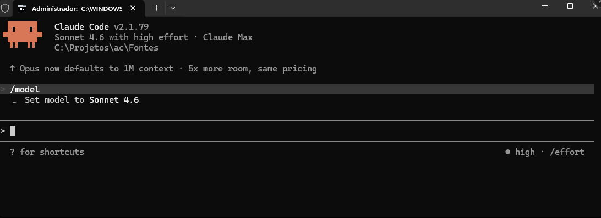
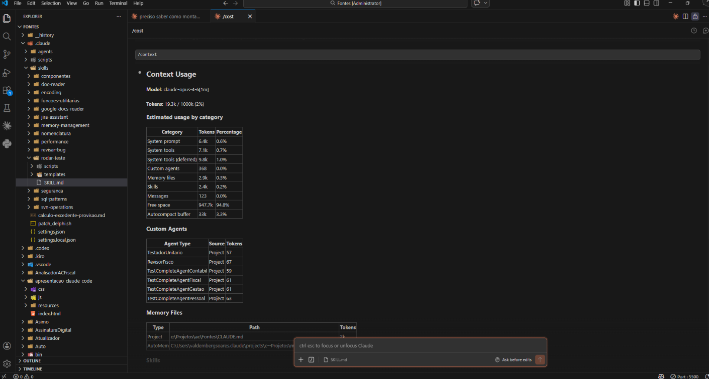
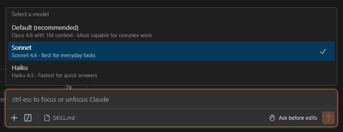

Do terminal ao commit — como usar Claude Code para acelerar
desenvolvimento com contexto estruturado e automação inteligente.
➡ use as setas do teclado para navegar
Clique em qualquer card para navegar diretamente à seção.
A ferramenta oficial da Anthropic para desenvolvimento assistido por IA — no terminal e no VSCode
Claude Code é a CLI oficial da Anthropic que integra o modelo Claude diretamente no seu terminal e IDE, permitindo desenvolvimento assistido por IA com acesso total ao seu projeto.
Terminal (CLI)

VSCode (Extensão)

Instalação, CLAUDE.md e configuração do ambiente
npm i -g @anthropic-ai/claude-codeRequer Node.js 18+ e conta Anthropic.
Arquivo na raiz do projeto com instruções persistentes: regras de encoding, arquitetura, skills e agentes.
É o "contrato" entre você e a IA.
"allow": [
"Bash(python:*)",
"Bash(svn:*)",
"Skill(rodar-teste:*)"
].claude/
├── settings.json
├── settings.local.json
├── skills/
├── agents/
└── plans/Cada equipe tem sua pasta .claude-{equipe}/ e CLAUDE-{equipe}.md com skills e agents específicos.
⚠ Requer Modo de Desenvolvedor no Windows (symlinks).
ConfigurarClaudeEquipe.bat
1 - Fiscal
2 - Contábil
3 - Pessoal
.claude → .claude-fiscal
CLAUDE.md → CLAUDE-fiscal.mdEnsine o Claude a seguir os padrões do seu projeto
.md em .claude/skills/ que ensinam o Claude a executar tarefas específicas do seu projeto.
/nome-da-skill/encoding — regras de ISO-8859-1/sql-patterns — padrões de TDLQuery/memory-management — Create/Free/nomenclatura — prefixos de arquivos e classes/componentes — TDL* vs padrão Delphi/rodar-teste — testes DUnit/revisar-bug — review automático/jira-assistant — integração Jira↓ pressione ↓ para ver como funciona
Cada skill é um arquivo .md com frontmatter YAML + corpo Markdown:
---
name: encoding
description: Regras de encoding ISO-8859-1.
Carregar SEMPRE que for editar .pas/.dfm
user-invocable: true
---
## Regras de Encoding
- NUNCA usar UTF-8 em .pas/.dfm/.dpr
- SEMPRE usar patch_delphi.sh para editarnameIdentificador da skill. Usado no /nome-da-skill.
descriptionO Claude usa essa descrição para decidir quando carregar automaticamente. Quanto mais específica, melhor.
user-invocableSe true, aparece como comando /skill que você chama manualmente.
Instruções que o Claude segue quando a skill é carregada: regras, exemplos e templates.
O Claude lê a description de todas as skills e decide automaticamente quais carregar com base no contexto da conversa.
| Você faz isso... | O Claude carrega... |
|---|---|
Edita um arquivo .pas |
/encoding + /nomenclatura |
Escreve uma query TDLQuery |
/sql-patterns |
Usa Create / Free |
/memory-management |
| Pede para revisar um bug | /revisar-bug + /jira-assistant |
Digita /rodar-teste |
/rodar-teste (manual) |
/skill.
Agentes personalizados que automatizam o pipeline de desenvolvimento
Agents são arquivos .md em .claude/agents/ que definem sub-agentes especializados com papel, ferramentas e regras próprias.

Criamos um pipeline completo de desenvolvimento com 4 agents:
↓ pressione ↓ para ver cada agent
Jira → Plano técnico
Plano → Código Delphi
Código → Testes DUnit
Code review automático
PLANO_FISCO-XXXX.md estruturadoModelo: Opus · Tools: Read, Glob, Grep, WebFetch, Bash, Skill
patch_delphi.sh (encoding ISO-8859-1)Modelo: Sonnet · Tools: Read, Write, Edit, Glob, Grep, Bash
TDBTestCaseKrRepositorio.pas/rodar-teste para compilar e executarModelo: Sonnet · Tools: Read, Write, Edit, Glob, Grep, Bash
Modelo: Sonnet · Tools: Read, Grep, Glob (somente leitura)
Vamos ver o Revisor Fisco em ação no VSCode
Vamos abrir o VSCode e chamar o Revisor Fisco para revisar código Delphi em tempo real.
.pas e patches SVN/revisar-bug FISCO-XXXXOu selecione um arquivo e peça:
Revise este código usando
o agent RevisorFiscoVamos ao VSCode...
Truques e boas práticas para tirar o máximo do Claude Code
Documente convenções e regras — o custo de contexto é muito menor que o custo de retrabalho.
Uma skill por domínio, pequena e focada. Use triggers específicos para auto-carregamento.
O Claude salva automaticamente suas preferências e correções. Você também pode pedir "lembre disso". Contexto persistido entre conversas.
Lance múltiplos agents em paralelo para pesquisas independentes.
Revise diffs, rode testes e valide antes de commitar. Human-in-the-loop é essencial.
Seja específico. Dê contexto, mostre exemplos e defina critérios de aceite.
Aberto para dúvidas, curiosidades e discussão
Claude Code transforma o terminal em um ambiente de desenvolvimento inteligente.
Contexto estruturado + IA = produtividade real.